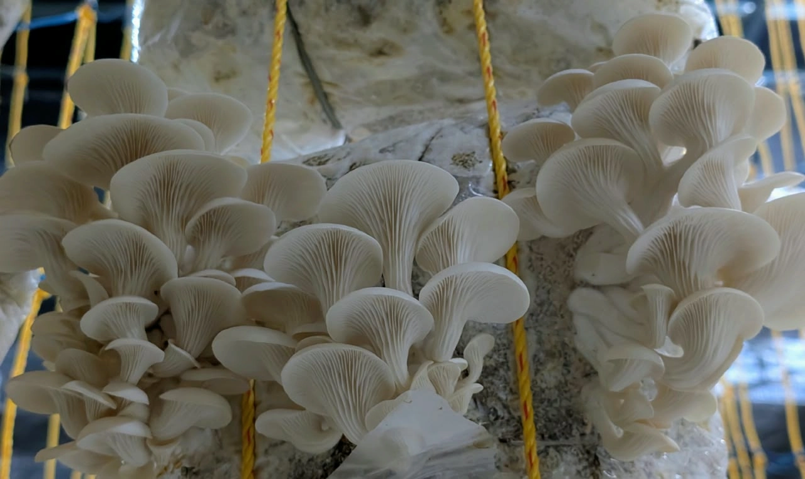
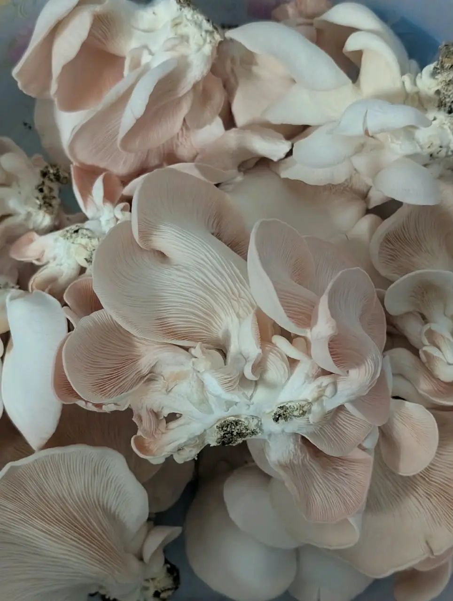
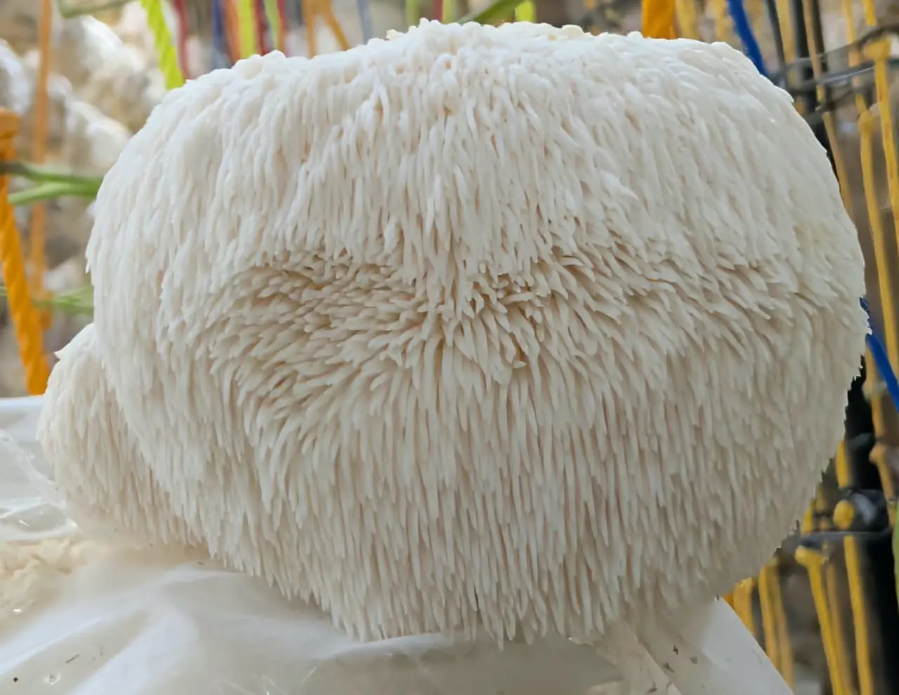
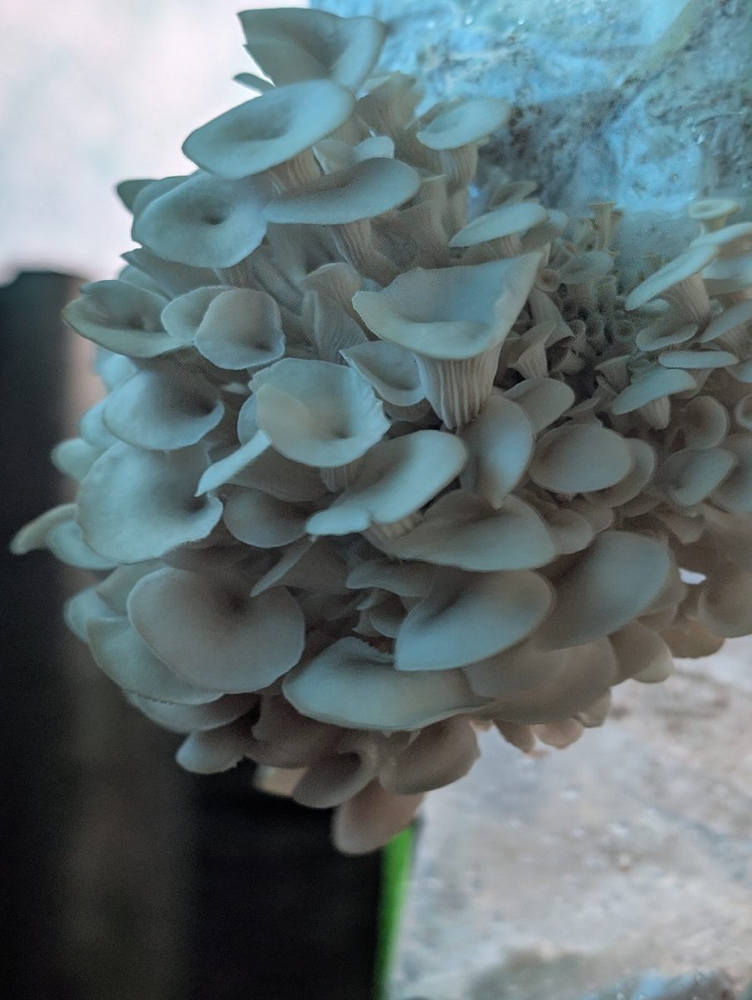
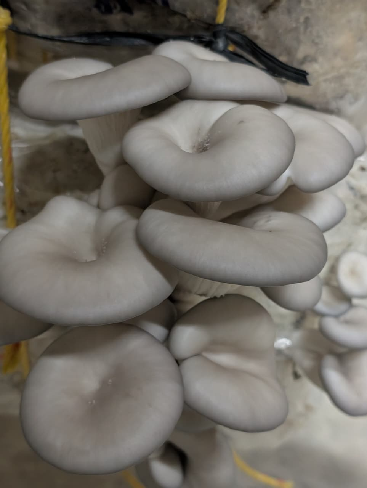

Fresh from the grow roomProduct Line 01
Fresh mushrooms
Explore our cultivated mushroom varieties. Ask us about current availability for households, retailers, restaurants, and food businesses.
-
Florida Warm-climate • Mild & velvety
A fast-fruiting white oyster with tender caps and a gentle, slightly sweet flavour that soaks up sauces beautifully.
Best for: Curries, soups, stir-fries
-
Pink Tropical • Smoky & crisp
Coral-pink clusters that fade to golden-brown in the pan and crisp up with a smoky, bacon-like bite.
Best for: Pan-searing, tacos, quick sautés
-
Lion’s Mane Prized • Seafood texture
Shaggy white spines that pull apart into tender, crab-like strands with a mild, naturally sweet flavour.
Best for: Roasting, crab-style cakes, soups
-
Elm Large caps • Firm & meaty
Not a true oyster, but a Hypsizygus cousin with big, firm caps and thick stems that keep their crunch when cooked.
Best for: Grilling, stir-fries, hearty curries
-
Golden Northeast Asia • Nutty aroma
Sunny-yellow clusters with a light crunch and a toasted, cashew-like aroma that lifts simple dishes.
Best for: Risottos, noodles, light sautés
-
Canadian Grey Cool-climate • Rich umami
Thick blue-grey caps with an earthy, savoury depth that hold their shape and keep well after harvest.
Best for: Roasting, grilling, rich gravies